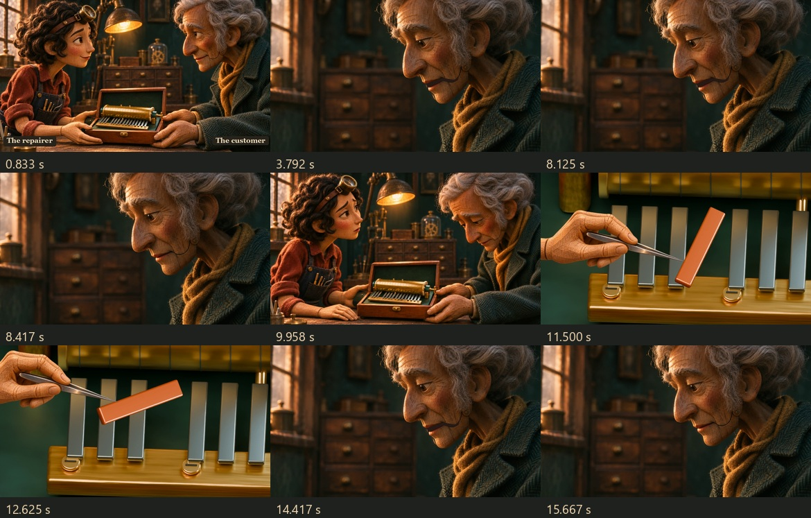

A note becomes a role
The customer supplies a note that his damaged music box cannot play. Repairing the comb displaces his voice. The repairer recognizes what the repair has cost him and removes the tooth. His sung note returns.
The accepted edit uses a generated sung “ah,” an interrupted fragment of that vocal and the same full note after removal. Its earlier breath effects were removed. The returning viewer accepted this cut with “great. now it works.”
Rubric and evidence-based reassessment · How the rubric works · The original AAT-inspired proposal

Frames extracted from the accepted movie. The timestamps let you inspect the performed sequence.
How the film changed
- First cut — the repairer stayed outside the frame and the customer was introduced through an isolated portrait.
- Shared-bench revision — both people and the extraction became visible.
- Vocal revision — a generated hum received a longer foreground moment.
- Motivation revision — a short line and concerned reaction explained the loss, while the final breath still failed to deliver the returned voice. Read its assessment.
- Accepted revision — the customer sings, the repaired box interrupts him and he reclaims the same note after removal.
Sources and receipts
The film uses GPT Image character and hand plates, the SVG & 3D Design workflow, Blender geometry and render layers, ElevenLabs audio, Python compositing and FFmpeg encoding. Codex coordinated implementation, checks, iteration and publication. Tools, inputs, outputs and review loops